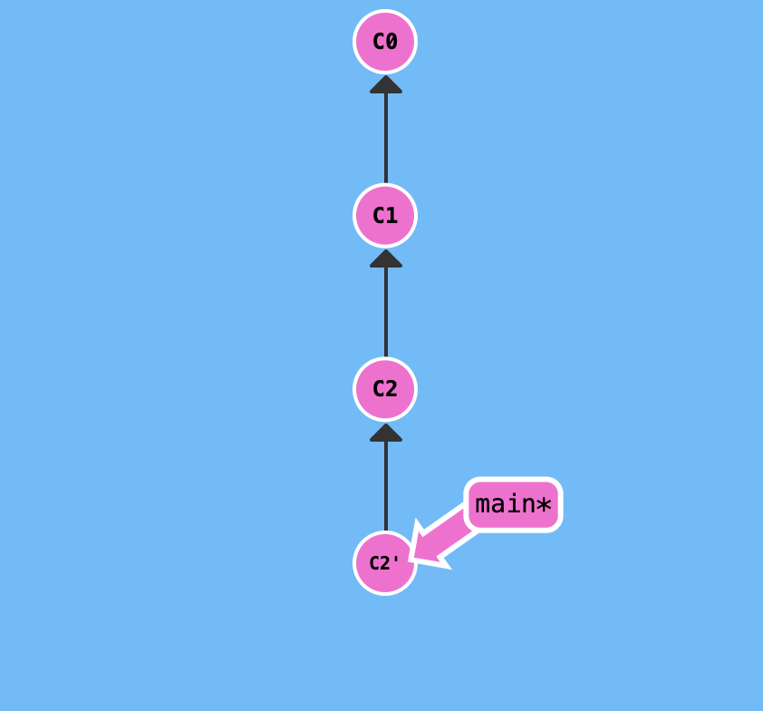

好久不見來個 Git。
簡述
這邊我們直接拿範例來解釋，假設這是一開始的紀錄：
執行 git reset HEAD^ 以後的結果如下：
執行 git revert HEAD 以後的結果如下（注意沒有 ^）：

簡單來說兩個都是回到上一個 commit 的紀錄點，但差別在於 reset 是直接把該筆紀錄清除，而 revert 則是額外產生一個新的 commit 紀錄。
當時我對 revert 的方式有點疑問，因為明明直接清掉不是更乾脆嗎？何必多產生一筆新的 commit？但這邊可以先思考一件事情：
如果這些紀錄是有推到遠端上的話，你在本地做
reset的話要怎麼同步到遠端上？
有操作過遠端倉庫的人一定都知道，如果在本地做 reset 的話是沒辦法把這些資訊 push 上去的，因為 Git 會跟你說本地端落後遠端的進度。唯一的方法只有用 git push -f 來強制更新（但一般不太可能這樣做），否則的話是沒辦法同步到遠端上的。
可是如果是 revert 的做法就不會有這個問題，因為你是把內容重置後在建立一筆新的 commit 紀錄，既然這是新的 commit 紀錄，就不會有剛剛本地端落後遠端的問題，所以這時候就可以順利的把遠端也做 reset 的更新。